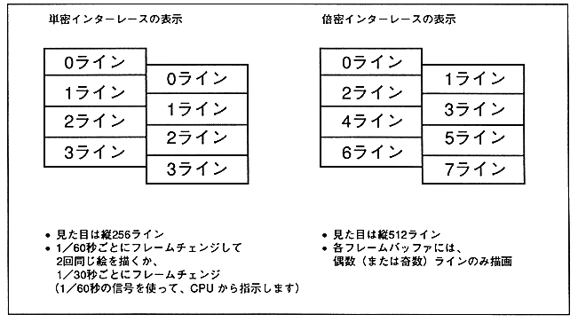

DIE | DIL | Interlaced mode | Draw after next frame change |
0 | 0 | Non-interlaced / | All line drawing |
0 | 1 | Setting prohibited | − |
1 | 0 | Double dense interlace | Draw only even (EVEN) lines |
1 | 1 | Double dense interlace | Draw only odd (ODD) lines |
Figure 4.1: Display of single dense interlace and double dense interlace
